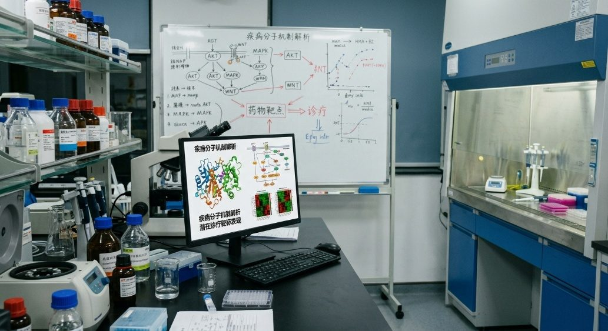

疾病分子机制解析与诊疗靶标发现
围绕免疫相关疾病、神经损伤、慢性脑缺血及其他重大慢性疾病，综合运用分子生物学、多组学分析和动物模型等技术，解析疾病发生、发展及组织损伤修复过程中的关键分子机制。重点筛选与疾病诊断、风险预测、预后评估和治疗响应相关的生物标志物与调控靶点，并开展功能验证，为疾病早期识别、精准诊疗和干预策略研究提供理论依据。
聚焦信息技术与生物医学交叉的前沿研究方向
团队围绕疾病分子机制解析与靶标发现、医学与农业相关的生物信息领域、干细胞与生物医学材料的转化医学三大方向开展研究，形成"机制解析 — 数据挖掘 — 转化应用"贯通的研究布局。

围绕免疫相关疾病、神经损伤、慢性脑缺血及其他重大慢性疾病，综合运用分子生物学、多组学分析和动物模型等技术，解析疾病发生、发展及组织损伤修复过程中的关键分子机制。重点筛选与疾病诊断、风险预测、预后评估和治疗响应相关的生物标志物与调控靶点，并开展功能验证，为疾病早期识别、精准诊疗和干预策略研究提供理论依据。

面向医学健康与地方特色农业发展需求，开展基因组、转录组、蛋白组、代谢组及医学人群数据的整合分析，运用生物信息学、人工智能和统计学方法挖掘关键基因、分子标志物及潜在调控网络。在医学领域，重点开展疾病风险预测、辅助诊断及预后评估研究；在农业领域，围绕达州特色动植物种质资源，开展基因组组装与注释、遗传变异检测、泛基因组分析、优良性状挖掘、分子辅助育种及疫病防控研究，为地方医疗健康服务和特色农业产业发展提供技术支撑。

围绕组织损伤修复、功能重建与再生医学需求，研究干细胞增殖、分化、迁移及其微环境调控机制，评价其在组织修复和疾病干预中的应用潜力。结合生物医学材料，探索细胞递送、组织支架、药物缓释及局部微环境调控等技术，开展材料生物相容性、功能效应和安全性评价，推动干细胞与生物医学材料在组织修复、功能改善及相关疾病干预中的转化应用。